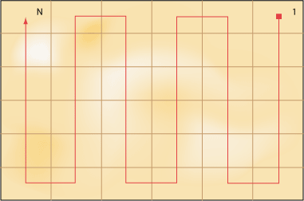
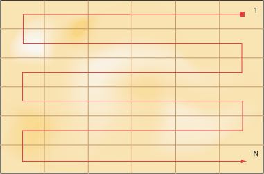

Разобьем пустыню на ряд элементарных прямоугольников, размер которых совпадает с размером клетки для льва. Пронумеровав прямоугольники от 1 до N, начинаем последовательно накрывать их клеткой (рис. 1). Каждое такое действие называется итерацией, что и послужило названием метода.
Рис. 1. Разбиение пустыни на N элементарных прямоугольников
В результате максимум за N итераций лев будет пойман в клетку.
Как видно из приведенного рисунка, начинать поиски льва можно с любой клетки, главное, чтобы за ограниченное количество шагов обойти все прямоугольники. При этом обход можно делать по вертикали, горизонтали (рис. 2) или диагонали.
Рис. 2. Обход пустыни по горизонтали

Средний самец льва имеет длину около трех метров и весит от 180 до 230 килограмм.
Львы питаются не только убитыми животными, они также не брезгуют падалью.